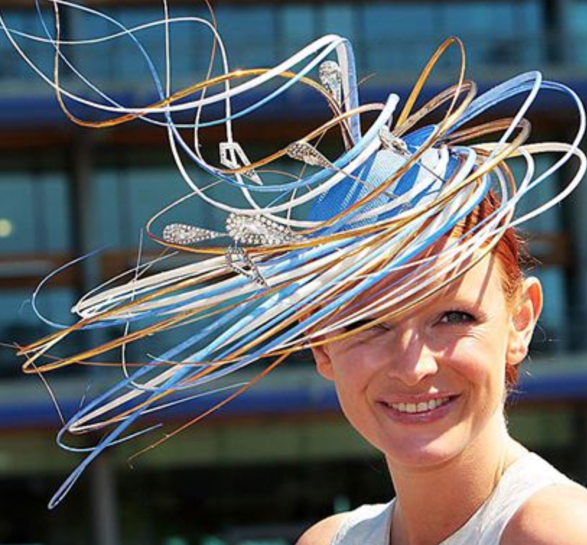

Fascinators Fabuloso!

My biggest goal of the final project was to somehow incorporate my sewing skills into the 3D printing skills I have learned over the quarter.
My biggest goal of the final project was to somehow incorporate my sewing skills into the 3D printing skills I have learned over the quarter.
Throughout the course of this quarter my dad and I have bonded quite a bit over the things I have had to make in this class. He even dusted off his 3D printer and started 3D printing things himself! For my final project I thought wouldn’t it be nice to do something special for my mom to enjoy also! My mom is quite the stage mom, she put my sisters and I through theater our entire childhood. When I learned to sew as a hobby, she was so inspired by the idea of making her own things. A few years ago, I bought her a sewing machine for Christmas along with some classes and now she will not stop making any and all things! She has even been “hired” as a volunteer costumier at our local community college for almost 5 years now, and recently during her retirement she started to design fascinators. She is slowly starting her own little business called “Fascinators Fabuloso” and here she is showing off some of her own designs:


If you are not sure what a fascinator is, Wikipedia’s definition is “A fascinator is a formal headpiece for women, a style of millinery, originally of lightweight knitted fabric.” These odd designs are typically seen at royal weddings.


For me, it’s easier to describe it as an oddly shaped, oddly placed tiny hat or head embellishment.
I have 4 overall goals with this project
The biggest thing I wanted to learn from my final project is incorporating my own learning and discovering how to 3D print on fabric. I think this would include creating dxf files of different patterns (such as lace) that I can use in rhino and using various online resources to help try different things. Additionally I’ll need to purchase a few yards of tulle lace, etc. from Michael’s or Joann’s

Flowers and embellishments are a big part of the design (especially my mom’s) however might potentially add weight to the end result, which could be uncomfortable. The idea here would be to try different sizes of flowers or perhaps designing my own that produce something that is comfortable and easy to pin onto/print into the end design. These flowers designed by Joshua Harker in his line Mazzo di Fiori is inspiration on how to print a flower design while saving weight.
For me, there need to be something odd and that’s what makes it a fascinator and not just a headband or a clip. I want to put something on like one of these swirls or something that really makes you question “how the heck is that on there?” The lily pad things on the bouquets of Josh Harker has a similar affect.
Typically, the fascinators I have seen and my mom designs stay on with a headband. But in some cases, you may need other clips or areas that need to be designed to allow for a bobby pin.